Inhalt Index DeskTop Bronstein

 Optimierung Lineare Optimierung Simplexverfahren Bestimmung eines ersten Simplextableaus
Optimierung Lineare Optimierung Simplexverfahren Bestimmung eines ersten Simplextableaus


Häufig ist es besonders bei einer großen Anzahl von Nebenbedingungen schwierig, sofort eine Ecke und damit ein Simplextableau anzugeben. Daher stellt man zunächst ein Hilfsprogramm auf, aus dessen Lösung sich ein Simplextableau der ursprünglichen Aufgabe ergibt. Dazu wird das Gleichungssystem 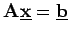 durch Multiplikation einzelner Gleichungen mit (-1) so modifiziert, daß 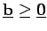 gilt. Nun wird auf der linken Seite jeder Gleichung eine künstliche Variable 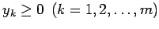 addiert und das folgende Hilfsproblem formuliert:
| 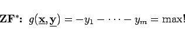 | (18.17a) |
| 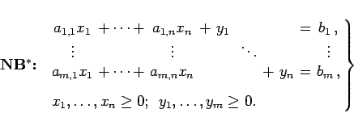 | (18.17b) |
Mit 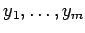 als Basisvariable kann sofort ein erstes Simplextableau angegeben werden:
Die letzte Zeile des Tableaus enthält die auf Nichtbasisvariable umgerechneten Koeffizienten der Hilfszielfunktion  . Offensichtlich ist 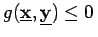. Ist für einen Maximalpunkt 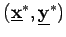 des Hilfsproblems 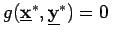, dann ist 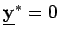 und folglich
. Offensichtlich ist 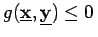. Ist für einen Maximalpunkt 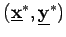 des Hilfsproblems 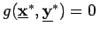, dann ist 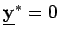 und folglich  eine Lösung von 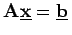. Andererseits besitzt bei 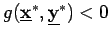 keine Lösung.
eine Lösung von 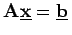. Andererseits besitzt bei 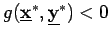 keine Lösung.